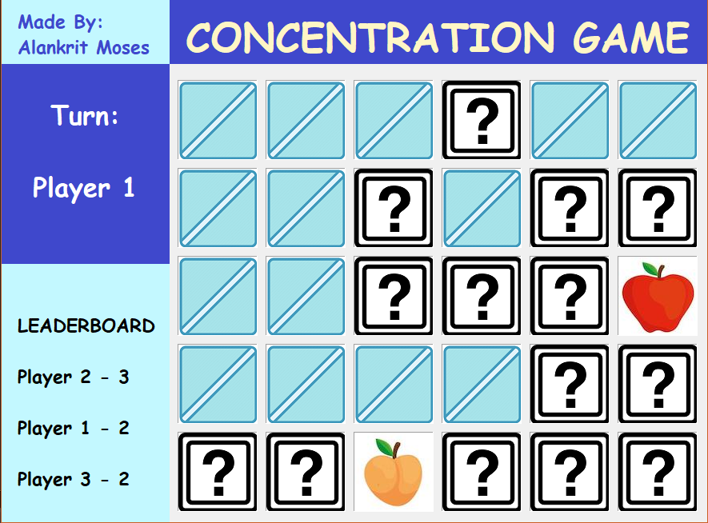
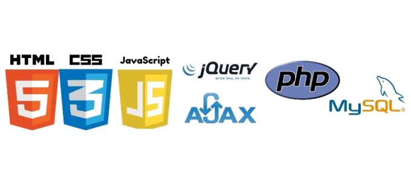

1. GUNS AND SKULLS
A game is nothing but a software, thus the development of this game required me to implement
the core concepts of Object-Oriented Programming as well other software development concepts.
Developing this game was a challenge in itself. It took me 2 months to complete this project after learning a few new concepts. This game has a fully working high score system with the track of top 5 scores ever held, like in an arcade.
An in-game settings panel to adjust other features of the game, enemy spawning, kills and health tracker and many more features. I could say I finally created something I was proud of.
2. CONCENTRATION GAME
Implementing the core concepts of Object Oriented Programming and System Design, this software/game was built on completely on Java using SWT for developing the GUI for it.

As a part of the Object Oriented Programming and Design course (CSC 335) offered by the Computer Science department at the University of Arizona, we were assigned the task of making this software as the first project.
3. WEBSITES
Apart from Software Development Course (CSC 210) I also completed a Web Programming course (CSC 337), where I learned both front-end and back-end programming, thus becoming a full-stack developer. I learned languages such as HTML, CSS, JavaScript, AJAX, XML,
PHP, and other concepts such as database management using SQL.

One of the example sites is this website itself. Though, its core application was the front-end concepts, but I didn't want to overcomplicate stuff.